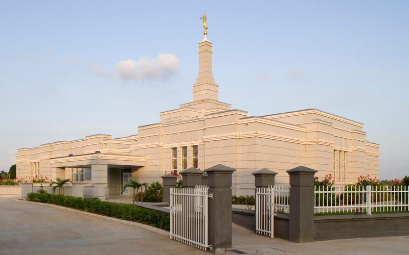
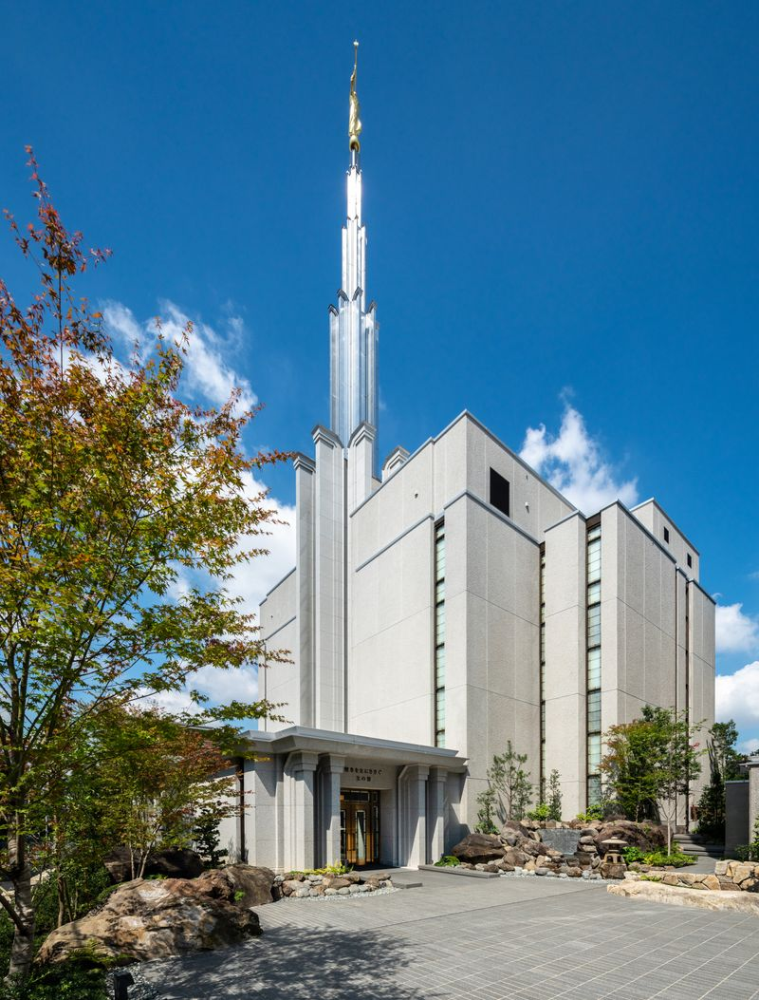

Temple Album
☰
Home
Old
New
Large
Small
Temples of The Church of Jesus Christ of Latter-day Saints
Salt Lake Temple
Provo City Center Temple
Rome Italy Temple
Laie Hawaii Temple
Benin City Nigeria Temple

Aba Nigeria Temple
Abijan Ivory Coast Temple
Accra Ghana Temple
Calabar Nigeria Temple
Cape Town Temple

Tokyo Japan Temple
Twin Falls Idaho Temple